Data
A list of dataset that I contributed to the collection, annotation, and release.
|
|
CORSMAL Containers Manipulation A dataset with 1140 audio-visual-inertial recordings of people interacting with (15) containers, using 4 cameras (RGB, depth, and infrared) and a 8-element circular microphone array. Containers are either empty of filled at 2 different levels (50%, 90%) with 3 different types of content (water, pasta, rice). For example, people can pour a liquid in a glass/cup or shake a food box. [details] [bibtex] |
| 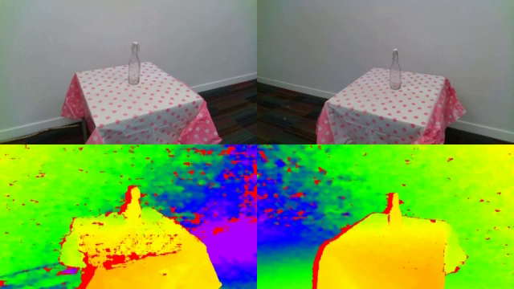 |
CORSMAL Containers A vision dataset of 23 transparent and non-transparent containers, such as drinking cups, drinking glasses and bottles. Each container lies on a table in two different setups with different lighting and background conditions, and is observed by two cameras with a wide-baseline, acquiring RGB, depth, and narrow-baseline stereo infrared images. [details] [bibtex] |
| 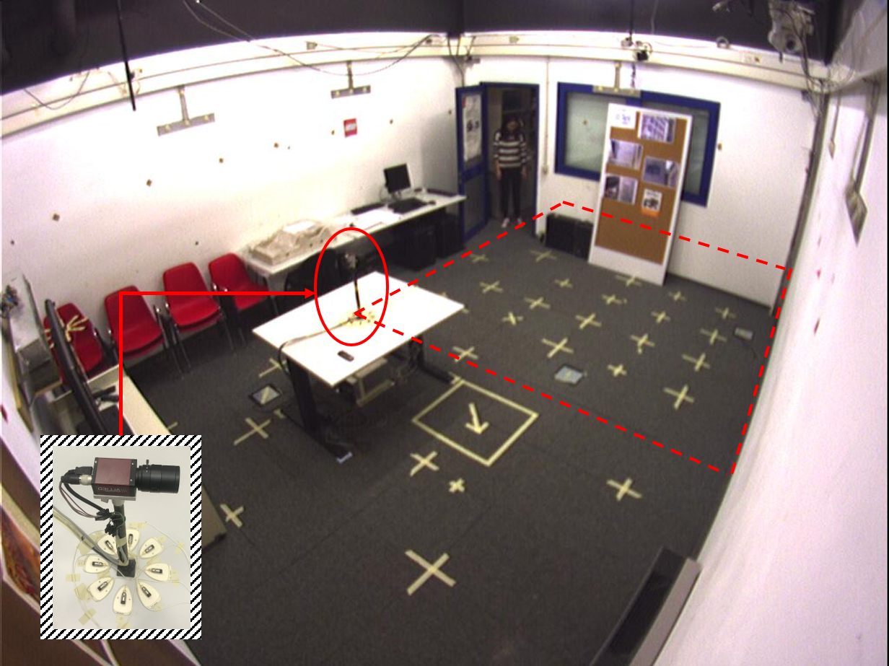 |
CAV3D (Co-located Audio-Visual streams with 3D tracks) A dataset for 3D speaker tracking was collected with a sensing platform consisting of a monocular colour camera co-located with an 8-element circular microphone array. The audio sampling rate is 96 kHz. Video was recorded at 15 frames per second. The sensing platform was placed on a table in a room with dimensions 4.77 x 5.95 x 4.5 m and reverberation time of approximately 0.7s to record up to three simultaneous speakers. In addition to the sensing platform, 4 hardware-triggered CCD colour cameras installed at the top corners of the room recorded the scene. The dataset is synchronized, calibrated and annotated. [details] [bibtex] |
|
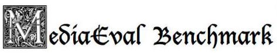
 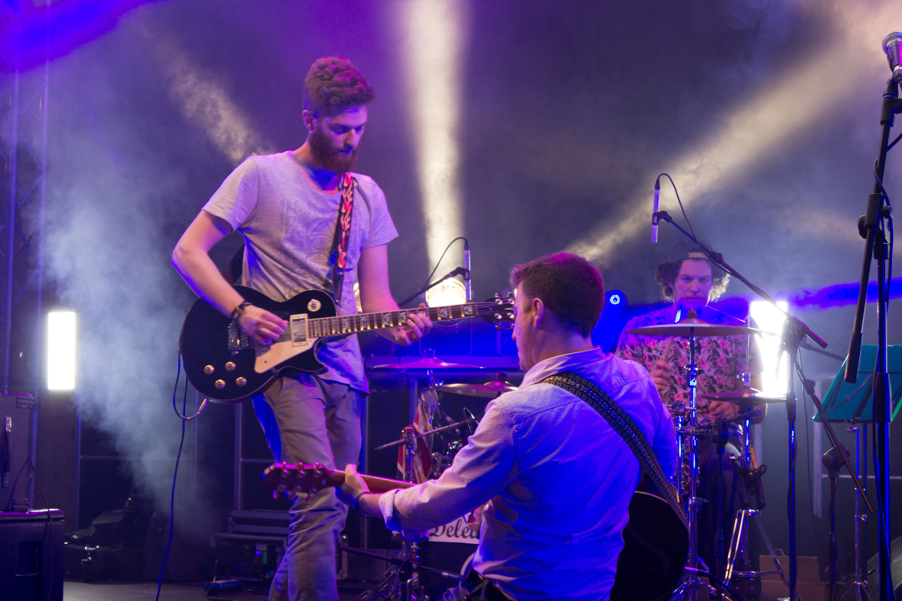
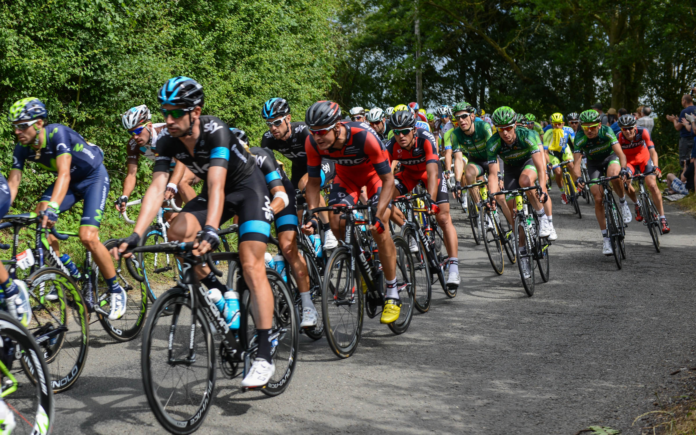
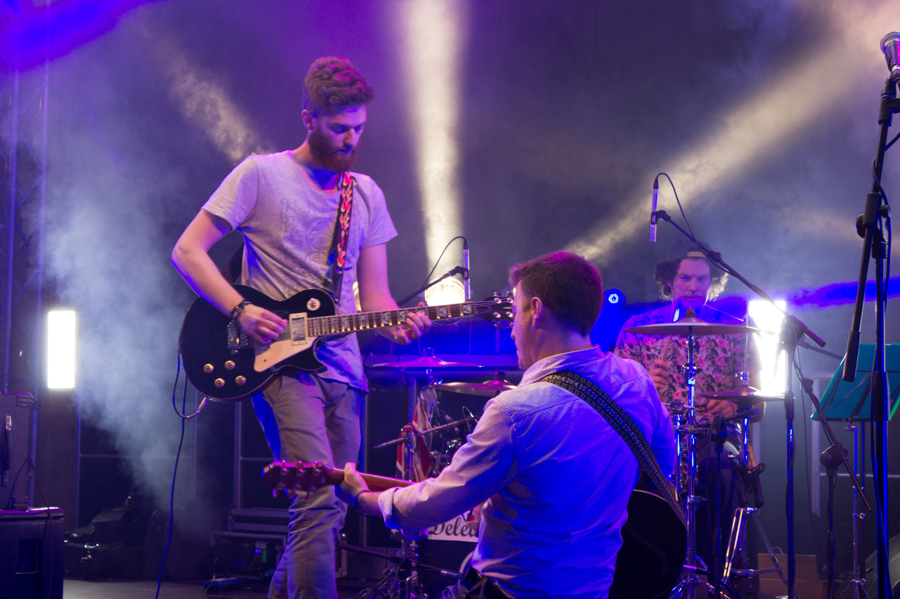
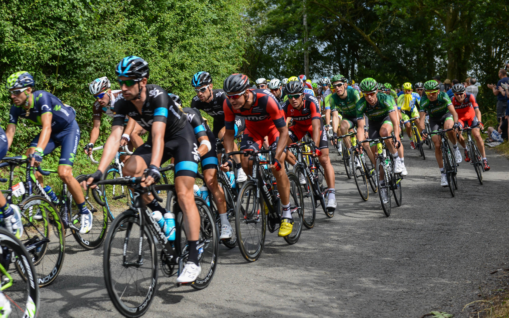
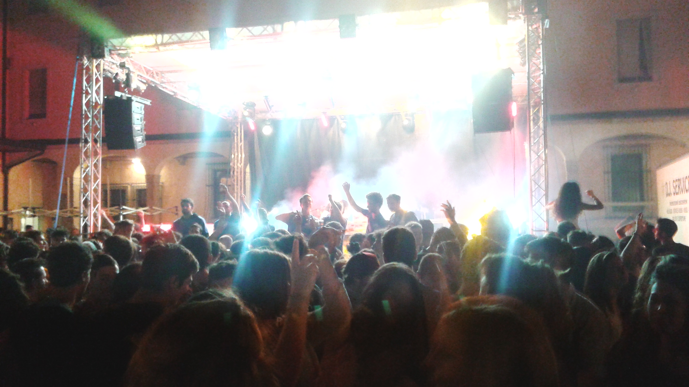 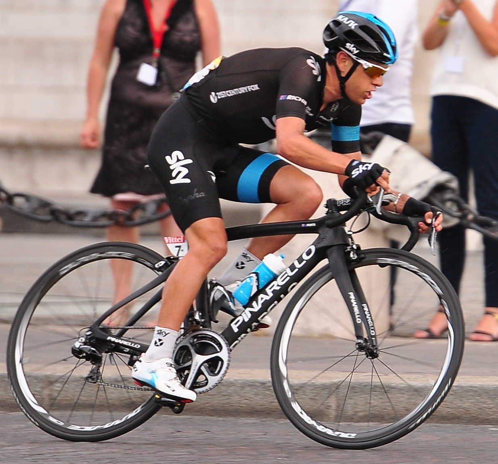 
|
Tour de France 2014, NAMM 2015, Spring Party Salesiani 2015 These datasets were collected and been part of the Synchronization of Multi-User Event Media (SEM) at MediaEval 2015: Task Description, Datasets, and Evaluation. Tour de France 2014 consists of images taken during the event and collected from Flickr. The dataset, split into 33 galleries, covers the entire competition. NAMM 2015 consists of 420 images downloaded from Flickr and 32 videos downloaded from YouTube. The dataset, split into 19 galleries, is related to the famous event held in California. The Spring Party Salesiani 2015 is a dataset collected by the organizers, and recorded duringa students' party held in Trento, Italy. It is composed of videos and pictures captured by the attendees during the event. [details] [paper] |
|
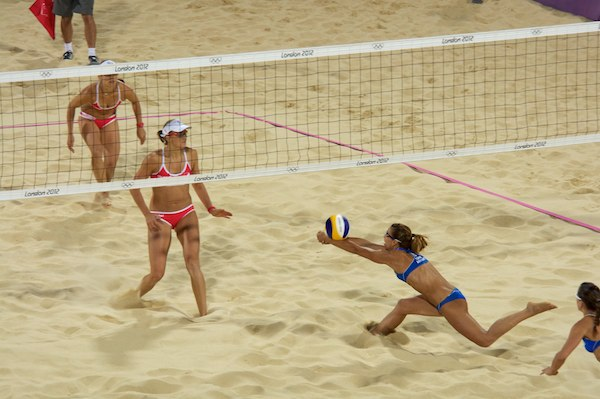 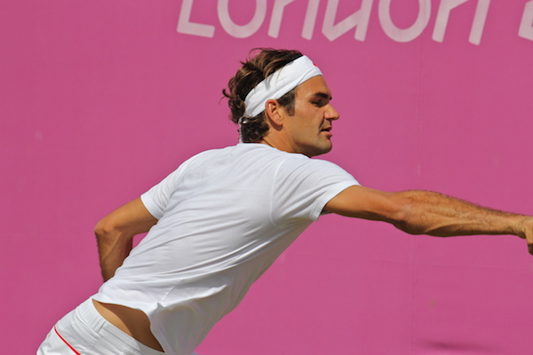 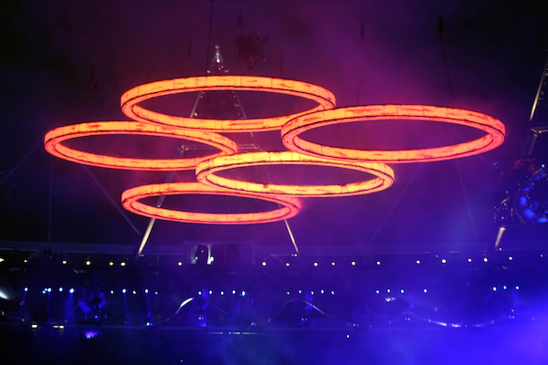 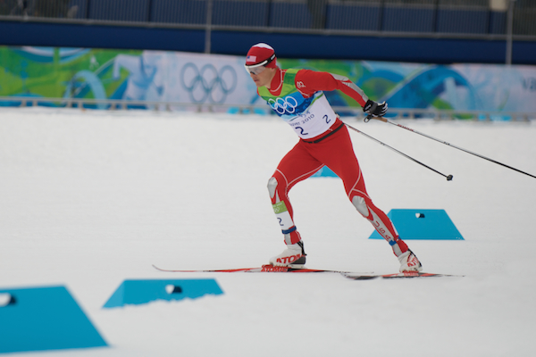 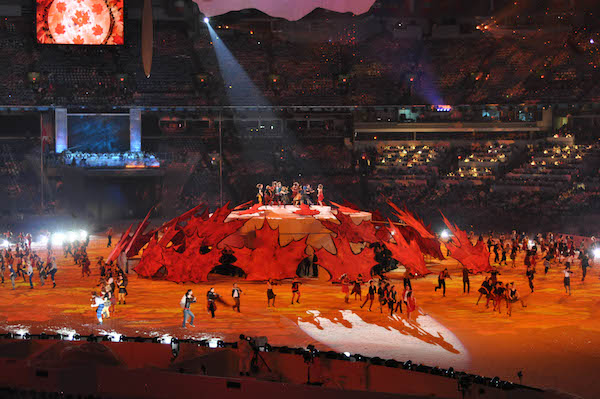 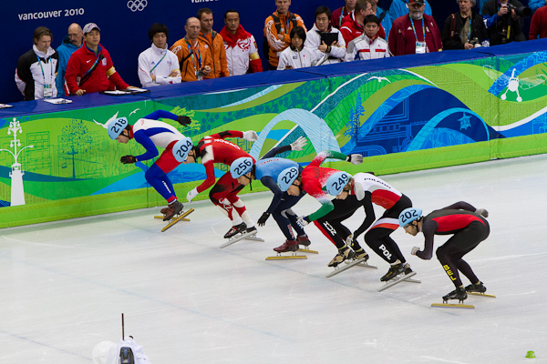 |
London Olympics and Vancouver Olympics Datasets As part of the Synchronization of Multi-User Event Media (SEM) at MediaEval 2014: Task Description, Datasets, and Evaluation, these datasets are a collection of images referring to structured sport events, namely the Olympic Games held in London in 2012 nad the Vancouver Winter Olympic Games of 2010. London Olympics includes 2124 images, divided into 37 galleries. Vancouver Winter Olympic Games includes 1351 pictures representing most of the competitions, divided into 35 galleries with a variable number of pictures in each gallery. The images were gathered from Flickr and made available under Creative Commons license. [details] [paper] |